Eksplorasi Desain Grafis & Identitas Visual
Koleksi karya mandiri dalam merancang identitas visual acara, desain kemasan produk (*commercial packaging*), media promosi cetak skala besar, atribut & apparel tim, serta tata letak kartu identitas modern. Dirancang dengan kepekaan tipografi, struktur warna harmonis, dan ketelitian teknis produksi.

Label Kemasan: Antiseptic Hand Sanitizer 100 ml
Desain stiker kemasan botol spray 100 ml yang resmi diproduksi massal dan dipasarkan ke konsumen/masyarakat oleh Farmasi SMK Swasta Bintang Timur. Menggabungkan label depan dinamis (gelombang navy-red, klaim 70% Alcohol & perisai antibakteri Kills 99.9% Germs) dengan label belakang edukatif yang memuat komposisi serta 6 langkah mencuci tangan higienis standar WHO.
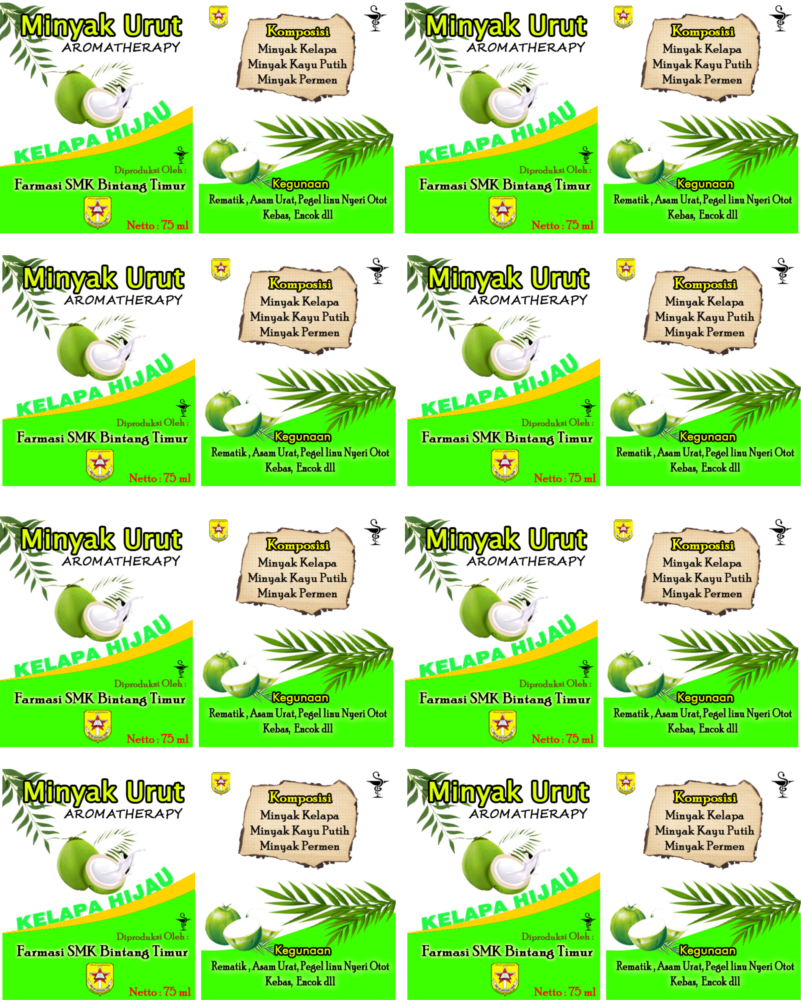
Label Minyak Urut Kelapa Hijau
Desain label kemasan botol 75 ml yang resmi diproduksi dan dijual bebas ke konsumen. Menampilkan visual buah kelapa hijau segar, perkamen komposisi alami, lambang farmasi mangkuk Hygieia, serta format lembar cetak siap potong (*ready-to-cut packaging*).
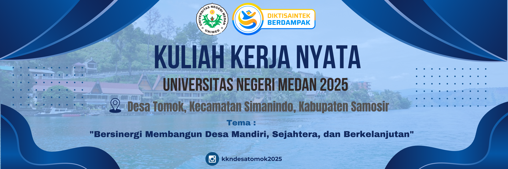
Spanduk Resmi KKN Desa Tomok
Perancangan media informasi outdoor untuk pembukaan dan penutupan kegiatan. Memadukan ilustrasi lanskap Danau Toba, ornamen gelombang modern bernuansa navy-cyan, serta hierarki tipografi formal agar pesan tema program terbaca jelas dari kejauhan.
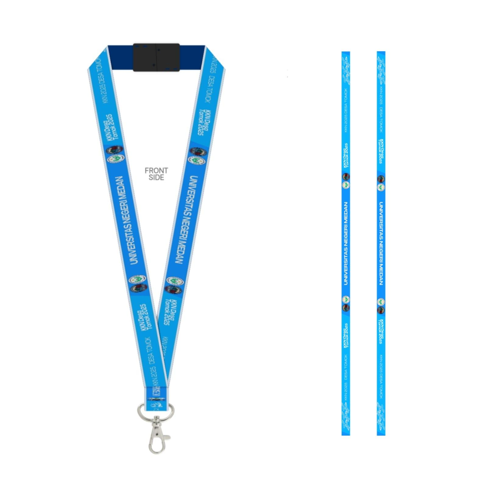
Tali Lanyard Identitas Panitia
Pola cetak sublimasi bolak-balik (2 sisi) untuk tali ID card panitia. Menyertakan motif awan tradisional Batak, gradasi biru langit, dan logo resmi universitas yang presisi hingga tahap jahit gantungan kait metal.
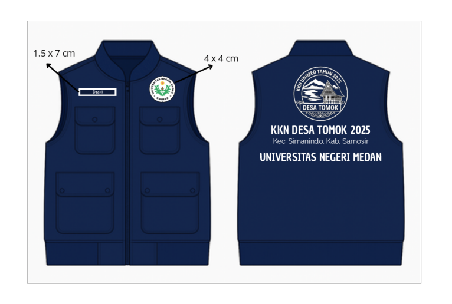
Rompi Lapangan Taktikal KKN
Spesifikasi teknis produksi pakaian lapangan (navy blue vest): penempatan 4 saku utilitas, dimensi patch bordir nama (1.5 x 7 cm), logo universitas (4 x 4 cm), serta emblem besar Rumah Bolon Batak di punggung.
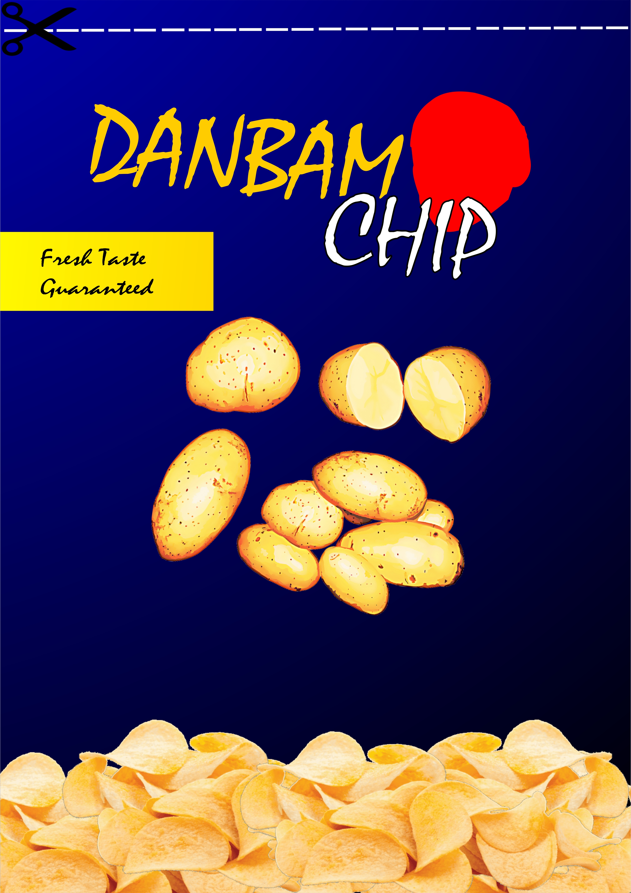
Desain Kemasan: DANBAM CHIP
Konsep kemasan standing snack pouch kentang goreng krispi (*Danbam Chip*). Memadukan tipografi kuas ekspresif, ornamen lingkaran stempel merah, ilustrasi vektor bahan baku kentang, serta komposisi foto keripik berlapis (*food photo montage*).
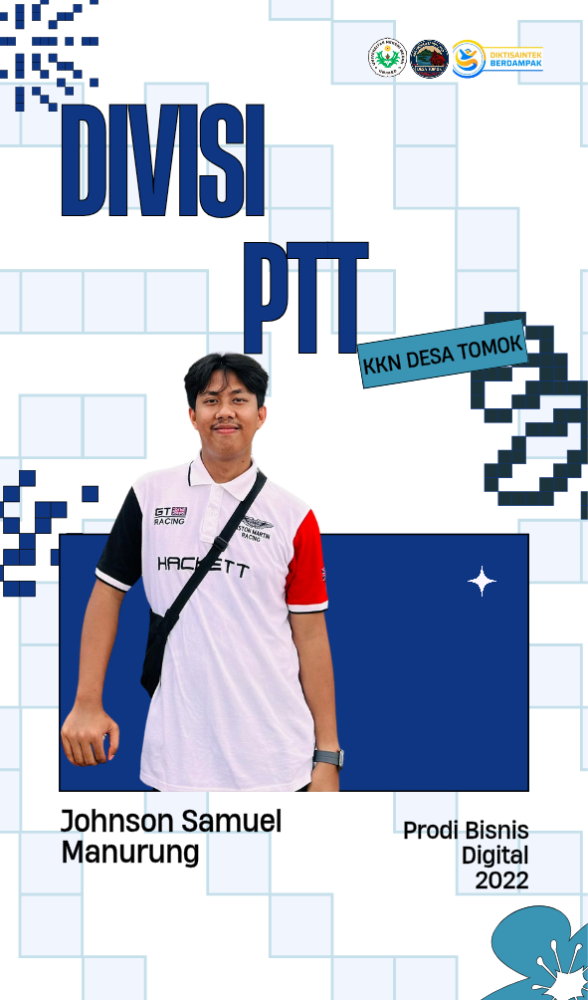
Kartu ID: Johnson S. Manurung
Desain kartu tanda pengenal pribadi dengan konsep Retro-Pixel Modern: tipografi vertikal tebal, aksen grid digital, pop-out foto subjek, dan label miring kontemporer.
Kolase Fotografi & Visual Storytelling
Koleksi jepretan lensa mandiri: arsitektur cagar budaya heritage, lanskap alam Danau Toba, *human interest*, serta geometri industrial. Klik foto untuk melihat detail resolusi tinggi.
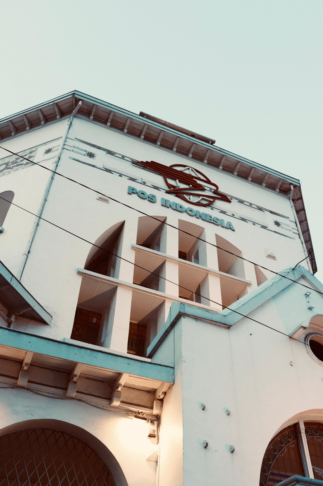
Heritage Architecture
Monumen Pos Indonesia
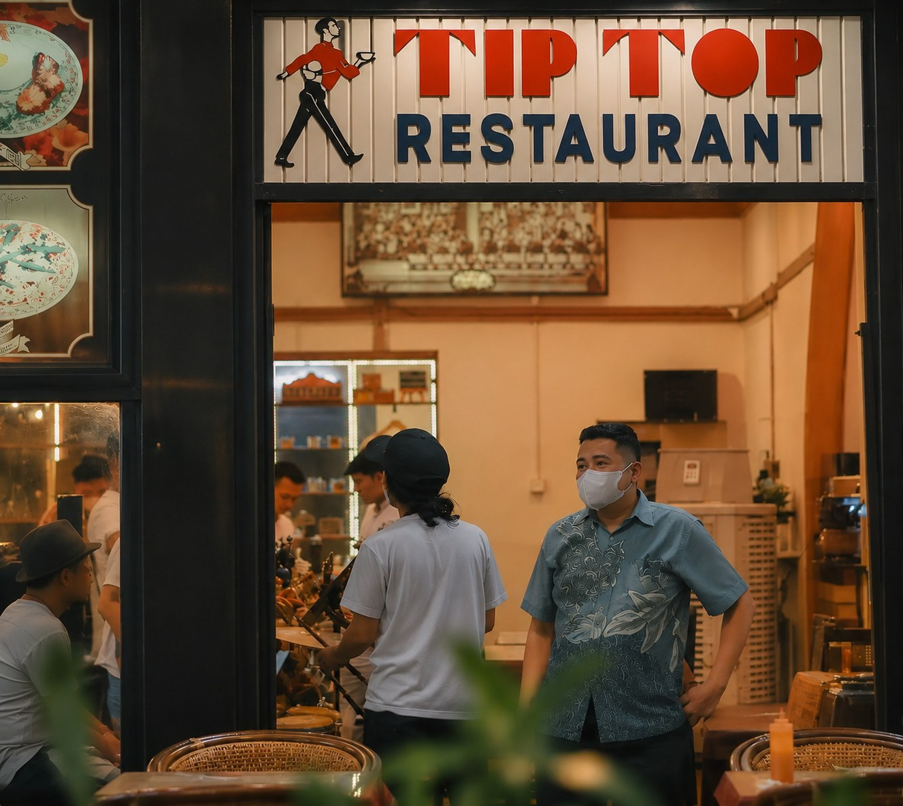
Urban Heritage • Since 1934
Pintu Masuk Restoran Tip Top
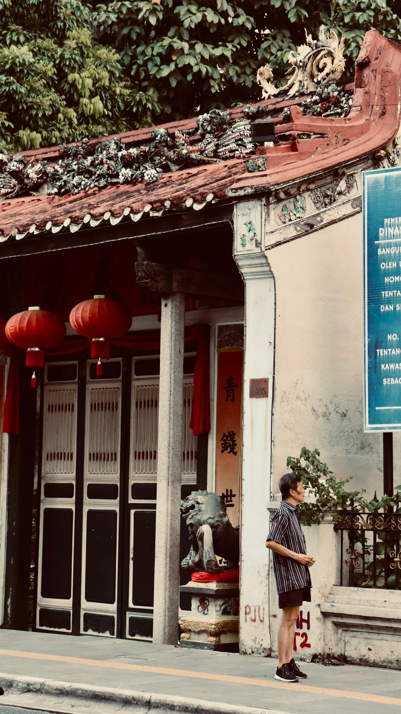
Clan House & Human
Harmoni Warisan Pecinan
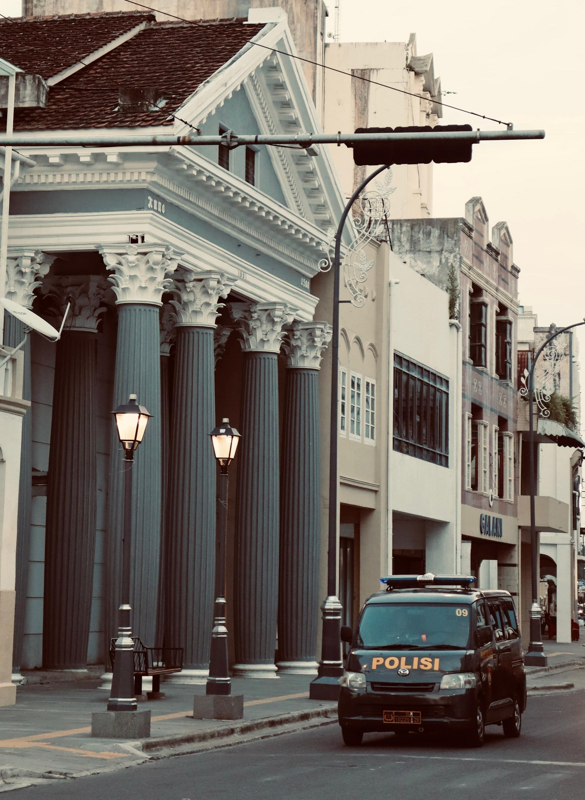
Neoclassical Facade
Patroli Koridor Kolonial
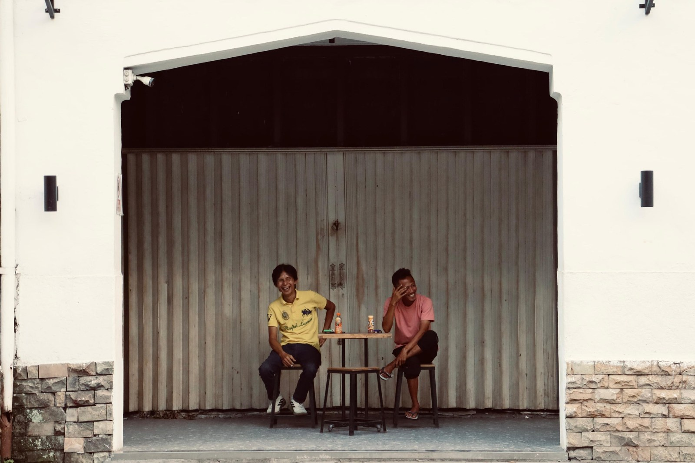
Candid Emotion
Tawa Lepas & Persahabatan
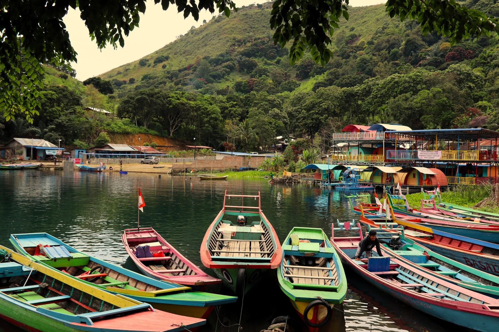
Natural Framing & Boats
Warna Bahari di Kaki Bukit Toba
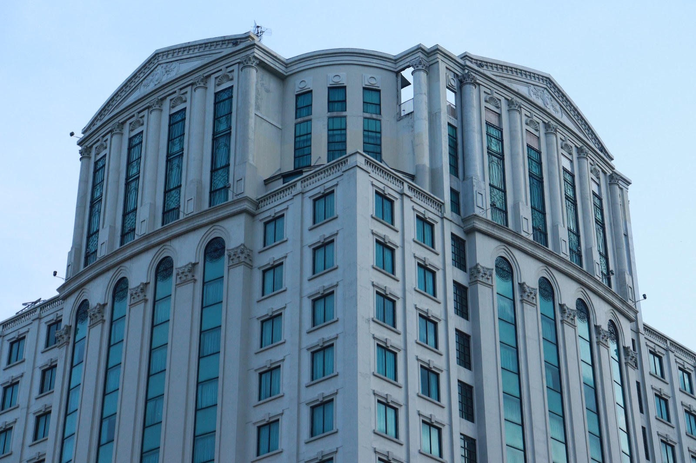
Perspective & Rhythm
Simetri Fasad Neoklasik
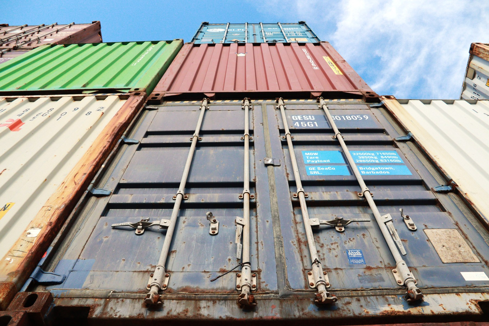
Industrial Geometry
Monolit Baja Logistik
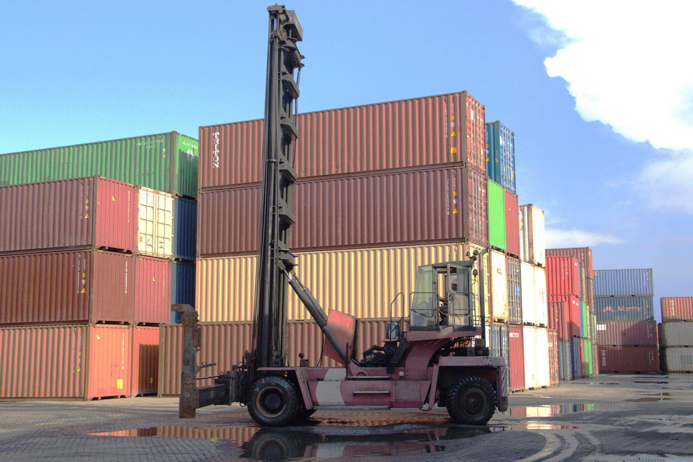
Depot Operation & Reflection
Raksasa Angkat & Skala Operasi Depo
Ingin melihat rekam jejak pengalaman kerja & sertifikasi?
Jelajahi studi kasus magang logistik, riset skripsi HAKI, dan kompetensi teknis di halaman utama.